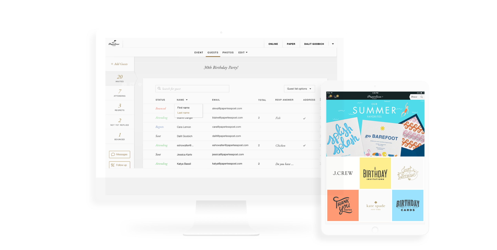
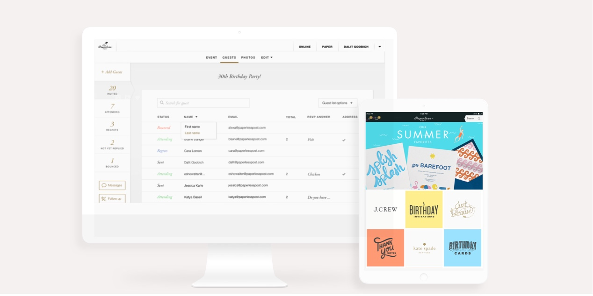

Paperless Post
Making a dense desktop product feel clearer, more ordered, and easier to navigate through hierarchy and intentional design decisions.
- Role
- Senior Product Designer
- Timeline
- [Placeholder: e.g. 6 months]
- Platform
- Desktop Web
- Deliverables
- UX/UI, Design System, Prototypes
The Challenge
Bringing order to a feature-rich desktop product
The existing product surface was dense with options but lacked clear structure. Users struggled to navigate between creation, customization, and management workflows.
[Placeholder: Describe the state of the existing desktop product. What pain points existed around content density, navigation, and workflow complexity? Where did users feel overwhelmed or lost?]
[Placeholder: Users creating and managing digital invitations — from casual hosts to event professionals. The goal was to reduce cognitive load, simplify navigation, and make the product feel more approachable.]
Process
Structuring clarity across a dense product
[Placeholder: Research and audit]
[Placeholder: Audited the existing desktop experience across creation, customization, and management flows. Identified areas where information density created confusion and where users dropped off in multi-step workflows.]
[Placeholder: Structure and hierarchy]
[Placeholder: Restructured the product's navigation and content hierarchy. Mapped user mental models against the existing layout and proposed a clearer grouping of tools, templates, and management surfaces.]
[Placeholder: Interface refinement]
[Placeholder: Developed a refined visual language that balanced the brand's elegant aesthetic with functional clarity. Focused on spacing, type hierarchy, and consistent component patterns to reduce visual noise.]
[Placeholder: Testing and iteration]
[Placeholder: Built interactive prototypes for key workflows and ran usability sessions. Iterated on panel layouts, toolbar organization, and state management based on direct user feedback.]
Solution
The refined desktop experience


Outcomes
Measurable impact
[Placeholder: e.g. Task completion rate]
[Placeholder: Describe what improved and how it was measured.]
[Placeholder: e.g. Reduced drop-off]
[Placeholder: Describe the second key outcome.]
[Placeholder: e.g. Screens designed]
[Placeholder: Describe the third key outcome.]
Let's build something together.
Open to senior product design roles and select consulting engagements with teams that value product rigor and visual quality.